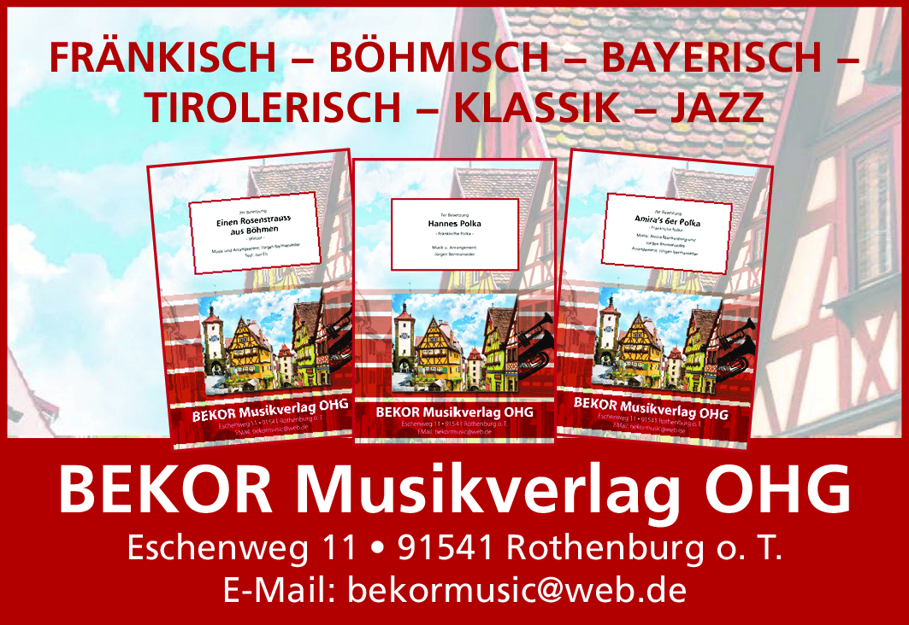
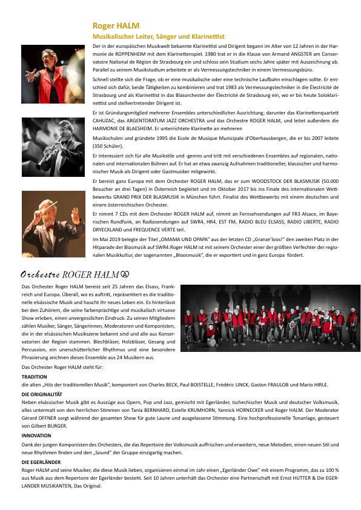

Fränkisch & Böhmisch
Polka, Walzer, Marsch und traditionelle Tanzformen mit authentischem Klang.
Musik mit Heimat, Herz und Charakter
Professionelle Notenausgaben für Blasorchester und kleine Besetzungen – fränkisch, böhmisch, bayerisch, tirolerisch, klassisch und jazzig.
Wir über uns
Gegründet von Ewald Komar und Jürgen Bermanseder. BEKOR pflegt fränkische Volksmusik, böhmische Blasmusik und neue Werke für kleine Besetzungen bis zum großen Blasorchester.
Mehr über BEKOR
Schwerpunkte
Polka, Walzer, Marsch und traditionelle Tanzformen mit authentischem Klang.
Melodische Werke aus der bayerischen Musiktradition und dem Werdenfelser Land.
Konzertmärsche, Fantasien, Swing und moderne Blasmusik für die Bühne.

Neue Serie
Eine musikalische Hommage an das Elsass: Blasmusik mit Charakter, Tanz, Tradition und Herzblut.
Elsass-Serie ansehen